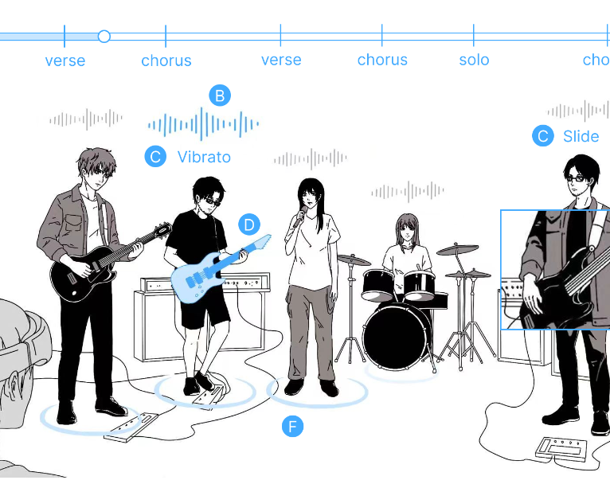
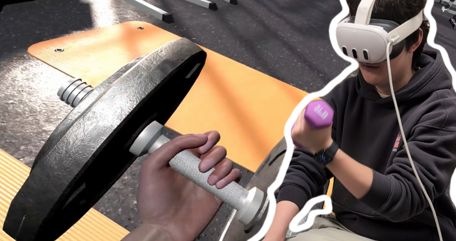

ConXRtLens
Borrowing an Expert’s Ears: Perceptual Guidance for Novice Concert Appreciation in XR
Zhang, T.*, Guo, R.*, Wu, Y., Liu, B., Duan, Z., and Yan, Y.
Finished manuscript

郭润芃
Computer Science
Brain & Cognitive Science
I’m a senior studying Computer Science and Brain & Cognitive Science. I conduct human–computer interaction (HCI) research in the BEAR group under the supervision of Prof. Yukang Yan. I’m interested in how interactive technology can augment perception, improve accessibility, and support learning.
I believe there is much more to human perception and cognition than we often realize. I'm curious about what we notice, what we miss, and what possibilities remain unexplored. Through my research, I hope to design technologies that work naturally with the way people perceive and think, helping them overcome limitations and discover new ways of experiencing the world, without overwhelming them or taking away their freedom to explore.
Borrowing an Expert’s Ears: Perceptual Guidance for Novice Concert Appreciation in XR
Zhang, T.*, Guo, R.*, Wu, Y., Liu, B., Duan, Z., and Yan, Y.
Finished manuscript

Zhang, T., Yang, C.-H., Guo, R., Feng, C., Yang, J., Wang, Z., & Yan, Y.
Submitted to ACM IMWUT, November 2026
